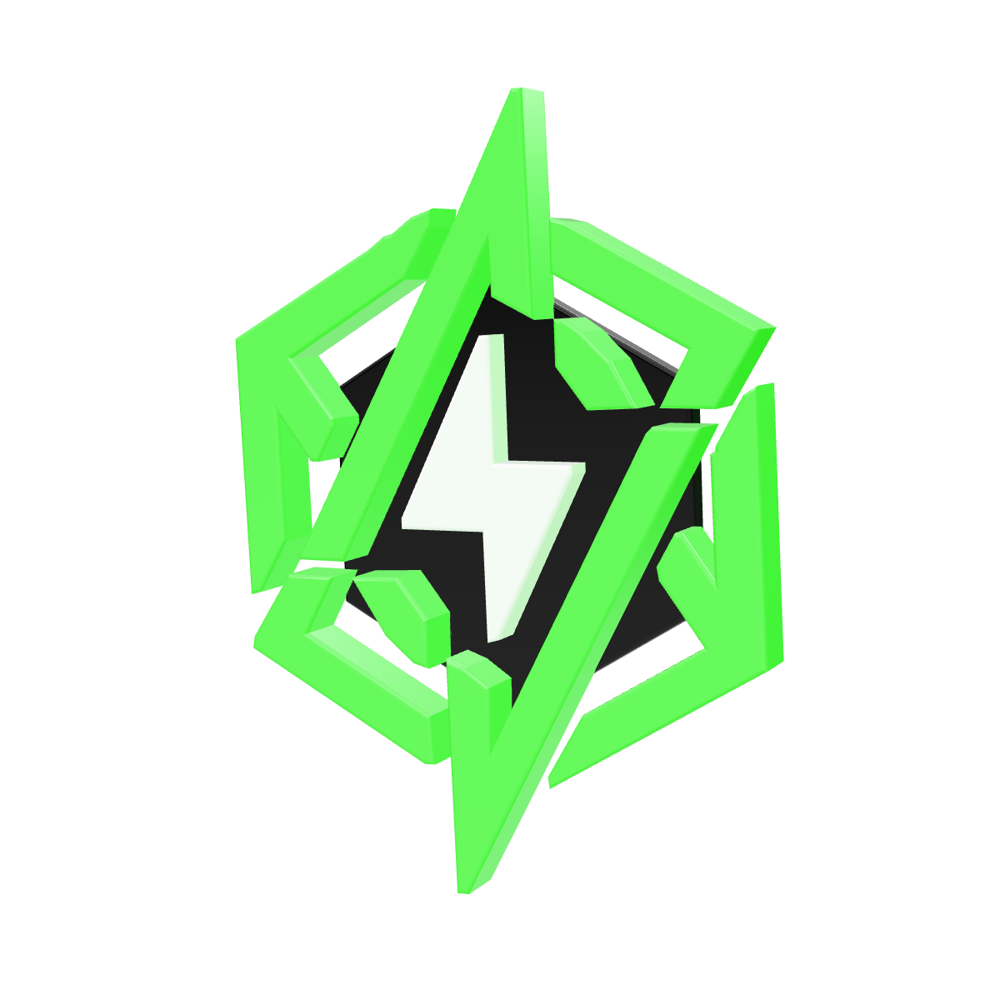

<!doctype html>
<html lang="pt-BR">
<head>
<meta charset="utf-8">
<title>NEON · Case</title>
<link rel="stylesheet" href="neon.css">
<style>
  .cta .obj3d { width: 570px; right: -10px; top: 80px; }

  /* 1. capa */
  .cover .hero { position: absolute; inset: 0 0 auto 0; height: 760px; z-index: 1; }
  .cover .hero.media { border-radius: 0; }
  .cover .hero.media::after { content: ""; position: absolute; inset: 0; background: linear-gradient(180deg, rgba(10,10,10,.35) 0%, rgba(10,10,10,0) 30%, rgba(10,10,10,.7) 78%, #0A0A0A 100%); }
  .cover .hero.slot { inset: 170px 84px auto 84px; height: 420px; }
  .cover h1 { font-size: 132px; }

  /* 2. antes */
  .rows { list-style: none; border-top: 2px solid var(--hair); }
  .rows li { display: flex; gap: 30px; align-items: flex-start; padding: 34px 0; border-bottom: 2px solid var(--hair); font: 500 38px/1.3 var(--body); }
  .x { flex: none; width: 46px; height: 46px; border-radius: 12px; border: 2px solid var(--muted); display: grid; place-items: center; color: var(--muted); font: 700 26px/1 var(--body); margin-top: 2px; }

  /* 3. o que fizemos */
  .steps { border-top: 2px solid var(--hair); }
  .step { display: grid; grid-template-columns: 110px 1fr; padding: 32px 0; border-bottom: 2px solid var(--hair); }
  .step .n { font: 800 64px/1 var(--display); }
  .step .t { font: 700 40px/1.2 var(--body); margin-bottom: 10px; }
  .step .d { font: 400 31px/1.4 var(--body); color: var(--muted); }

  /* 4. criativo */
  .split { display: grid; grid-template-columns: 1fr 400px; gap: 56px; align-items: end; }
  .split h2 { font-size: 112px; margin-bottom: 40px; }
  .split .why { font: 500 34px/1.4 var(--body); color: var(--muted); }
  .phone { height: 712px; }

  /* 5. resultado */
  .stats { border-top: 3px solid var(--ink); }
  .stat { display: flex; align-items: baseline; gap: 36px; padding: 26px 0 22px; border-bottom: 3px solid var(--ink); }
  .stat .v { font: 800 150px/1 var(--display); white-space: nowrap; }
  .stat .l { font: 600 34px/1.25 var(--body); }

  /* 6. depoimento */
  .quote-mark { font: 800 300px/.7 var(--display); color: var(--neon); text-shadow: 0 0 60px rgba(57, 255, 20, .4); margin-bottom: 30px; }
  blockquote { font: italic 600 60px/1.22 var(--body); letter-spacing: -.01em; }
  .who { display: flex; align-items: center; gap: 24px; margin-top: 56px; font: 600 32px/1.3 var(--body); }
  .who::before { content: ""; width: 70px; height: 3px; background: var(--neon); }
  .who span { color: var(--muted); font-weight: 500; }

</style>
</head>
<body>
<div id="deck"></div>
<script src="neon.js"></script>
<script src="cases.js"></script>
<script>
  const key = new URLSearchParams(location.search).get("c") || "dr";
  const c = window.CASES[key];
  const slide = makeSlide("Case", 7);

  const slides = [
    slide(1, "cover", `
      <div class="label">Case real · ${fmt(c.segmento)} · ${fmt(c.cidade)}</div>
      <h1>${title(c.capa)}</h1>
      <p class="sub">${fmt(c.capaSub)}</p>`,
      img(c.foto, c.fotoDica, "hero")),

    slide(2, "", `
      <div class="label">Antes da NEON</div>
      <h2>O cenário<span class="dot">.</span></h2>
      <ul class="rows">${c.antes.map(a => `<li><span class="x">✕</span><span>${fmt(a)}</span></li>`).join("")}</ul>`),

    slide(3, "light", `
      <div class="label">O plano</div>
      <h2>O que a gente <em class="hl">fez</em><span class="dot">.</span></h2>
      <div class="steps">${c.fizemos.map((f, i) => `
        <div class="step"><div class="n">0${i + 1}</div><div><div class="t">${fmt(f.t)}</div><div class="d">${fmt(f.d)}</div></div></div>`).join("")}
      </div>`),

    slide(4, "", `
      <div class="split">
        <div>
          <div class="label">Bastidor</div>
          <h2>O criativo que mais <em class="hl">vendeu</em><span class="dot">.</span></h2>
          <p class="why">${fmt(c.criativo.porque)}</p>
        </div>
        ${img(c.criativo.img, c.criativo.imgDica, "phone")}
      </div>`),

    slide(5, "green", `
      <div class="label">Resultado · ${fmt(c.resultado.periodo)}</div>
      <h2>Os números<span class="dot">.</span></h2>
      <div class="stats">${c.resultado.stats.map(s => `
        <div class="stat"><div class="v">${fmt(s.v)}</div><div class="l">${fmt(s.l)}</div></div>`).join("")}
      </div>`),

    slide(6, "", `
      <div class="quote-mark">“</div>
      <blockquote>${fmt(c.depoimento.texto)}</blockquote>
      <div class="who">${fmt(c.depoimento.autor)} <span>· ${fmt(c.depoimento.cargo)}</span></div>`),

    slide(7, "cta", `
      <div class="label">Diagnóstico grátis em 24h</div>
      <h2>Quer isso no seu <em class="hl">negócio</em>?</h2>
      <p class="sub">A gente analisa seu Instagram e seus anúncios e mostra onde você está perdendo cliente.</p>
      <div class="pill">Comenta “diagnóstico” ↗</div>`,
      ``, "Link na bio"),
  ];

  document.title = `NEON · Case ${c.cliente}`;
  document.getElementById("deck").innerHTML = slides.join("");
</script>
</body>
</html>
